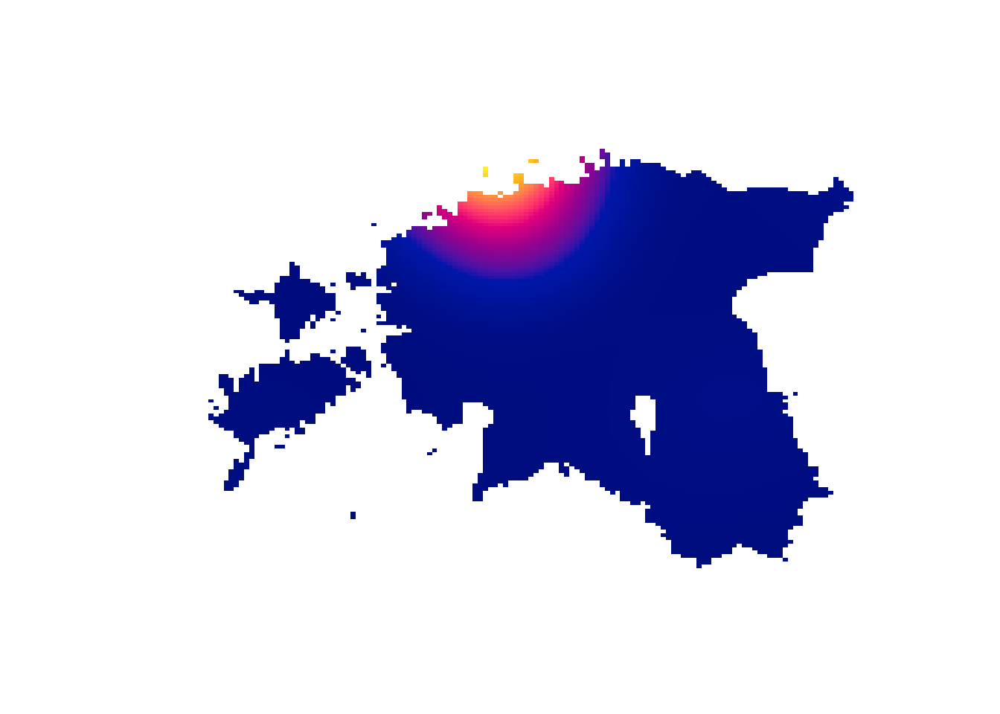

Mõnikord on andmetel ka ruumiline mõõde, mis määrab vaatluste paiknemise geograafilises ruumis. Mõned andmed hõlmavadki ainult vaatluste paiknemist ruumis ilma mingi muu, mitteruumilise teabeta vaatluste kohta. Mõlemal juhul võib anda ruumilise mõõtme kirjeldamine ja analüüsi kaasamine sellist teavet vaatluste ja tunnuste kohta, mis muidu jääks avastamata. Digitaalsete ruumiandmete kasutamine võetakse mõnikord kokku ka geoinfosüsteemi mõistega.
Andmete kujutamise viis sõltub sellest, kas eesmärk on kirjeldada andmete ruumi või kujutatavat objekti. Sellest lähtub ka maakaadi vormistamse viis.
Ruumi kirjeldamisel määrame igale punktile ruumis mingi väärtuse lähtudes objekti paiknemisest. Sellised andmed esitatakse rasterkaardil.
Objektide kirjeldamisel kujutame objekte ruumis ilma neid ruumi alusel lihtsustamata. Objektid on sel juhul esitatud punktidena või nendest koosnevate kujunditena vektorkaardil.
Mõiste
Kõige üldisemalt võib digitaalsed maakaardid jagada kaheks:
rasterkaardid, millel on iga ruudukujuline osa mingist suuremast alast esitatud ühe pikslina;
vektorkaardid, millel on esitatud mitmesugused objektid punktide alusel.
Kaardiandmete vorming määrab võimalused andmete kujutamiseks ja nende alusel arvutuste tegemiseks.
Käesolevas peatükis uurime andmete esitamist maakaartidel. Ruumiandmete analüüsimise võimalustest käsitleme ainult väikest osa.
31.1 Rasterkaaardid
Kõige lihtsam viis maakaarte mõista on läheneda neile kui piltidele. Digitaalses vormingus pildid koosnevad pikslitest, millest igaühel on mingi väärtus. Nii on see ka rasterkaardi puhul, kus pikslid esindavad mingit maa-ala. Teine viis on mõelda rasterkaardist kui andmemaatriksist, milles iga lahter esindab teatud maa-ala. Üks piksel pildil või lahter andmemaatriksis esindab rasterkaardi korral ruutu, mis esindab nt ruutkilomeetrit maastikul.
Need ruudud võivad esindada väärtusi kahte liiki skaalal:
pideval skaalal esitatakse arvtunnused, nt maapinna kõrgus, rahvaarv;
diskreetsel skaalal saab esitada nimitunnuseid, nt maakasutusviis .
Maakasutusviiside kohta Euroopas on alates 1990. aasta seisuga rasterkaardid kättesaadavad CORINE andmestikus. Neil kaartidel esindab iga piksel ühte hektarit. Kuvame nende andmete alusel maakasutuse Eestis aastal 1990, kasutades selleks laiendust raster.
Näeme, et pikslid on esitatud pideval skaalal arvudena. Siiski ei ole tegemist arvskaalaga, vaid iga väärtus esindab täpselt määratletud maakasutusviisi 1.
1 Lihtsustatult esindavad siin madalamad väärtused tehislikku ja kõrgemad väärtused looduslikku maakasutust.
plot(corine)
Rasterkaardilt saame välja lõigata ka mingi huvipakkuva ala. Selleks peame määrama selle ala nurgad. Võime uurida nt Tartut ja selle ümbrust, kus hektarisuurused pikslid tulevad selgemini esile.
Näeme, et kaardil on kuvatud jõgi ja raudtee, aga katkendlikult. See on mitut objekti kujutavate rasterkaartide üks puudus: konkreetsed objektid on nähtavad ainult siis, kui need moodustavad piisavalt suure osa pikslist.
Kuna rasterkaardid on sisuliselt pildid, siis enamasti on ühel rasterkaardil esitatud ainult ühe tunnuse väärtused. Harvem on rasterkaardil mitu kihti (raster band). Üks viis mitme tunnuse ühendamiseks on teisendada rasterkaart andmetabeliks, kus iga rida esindab ühte pikslit.
tartuDf <- tartu %>% rasterToPoints %>% as.data.framehead(tartuDf)
Näeme, et iga piksli vahe on 100 meetrit, mis ongi hektari küljepikkus. Andmetabeli kujule teisendatud andmeid saame joonistada kasutades funktsiooni ggplot.
library('ggplot2')ggplot(tartuDf) +aes(x = x, y = y, fill = corine1990) +coord_fixed() +geom_raster() +labs(fill ="Maakasutusviis") +scale_fill_distiller(palette ='Spectral', direction =1) +theme_void()
Kuna antud kaardi skaalal on esitatud nimitunnuse väärtused, siis oleks kohane lisada ka legend värvide tähendustega.
31.2 Vektorkaardid
Objekte on ruumis vaistlik kujutada nende võimalikult täpse asukoha või piiride alusel mingil koordinaatteljestikul. Vektorkaarditel kujutatakse objektid vastavalt nende asukohale või piiridele sõltuvalt objekti omadustest:
punkti (point) kujutamiseks piisabki ühest punktist,
joon (line) esitatakse punktide jadana,
kujund (polygon) määratakse selle piire esindavate punktide alusel.
Sealjuures sõltub objekti liik selle kujutamise täpsusest. Kui suure mõõtkava korral esitatakse objektid kujundina, siis väiksel mõõtkaval piisab objekti keskpunktist, sest kujund ei ole siis väiksuse tõttu eristatav.
R keeles on vektorkaartidega tegelemiseks mugav kastutada laiendust sf.
Näeme, et andmetabeli esimestes veergudes on koordinaadid. Saame kujutada vaatlused nende koordinaatide alusel hajuvusjoonisel, mille tulemuseks ongi maakaart süütegude asukohtadega.
plot(teod[, 1:2])
Koordinaatidega andmetabeli saame teisendada nö ruumiliseks andmetabeliks.
Kujundite näitena võime uurida omavalitsuste piire Eestis2. Selleks laadime alla Shapefile vormingus andmed ja loeme vastavas kaustas olevad failid R keskkonda.
2 Eesti maakondade, omavalitsuste ja asustusüksuste piirid on kättesaadavad Maa-amet Geoportaalis.
Reading layer `omavalitsus_20221101' from data source
`/home/jrl/projects/andmeteadus/andmed/omavalitsus' using driver `ESRI Shapefile'
Simple feature collection with 79 features and 5 fields
Geometry type: MULTIPOLYGON
Dimension: XY
Bounding box: xmin: 369032.1 ymin: 6377141 xmax: 739152.8 ymax: 6634019
Projected CRS: Estonian Coordinate System of 1997
ov
Simple feature collection with 79 features and 5 fields
Geometry type: MULTIPOLYGON
Dimension: XY
Bounding box: xmin: 369032.1 ymin: 6377141 xmax: 739152.8 ymax: 6634019
Projected CRS: Estonian Coordinate System of 1997
First 10 features:
ONIMI OKOOD MNIMI MKOOD TYYP
1 Ruhnu vald 0689 Saare maakond 0074 1
2 Muhu vald 0478 Saare maakond 0074 1
3 Viimsi vald 0890 Harju maakond 0037 1
4 Saaremaa vald 0714 Saare maakond 0074 1
5 Hiiumaa vald 0205 Hiiu maakond 0039 1
6 Kihnu vald 0303 Pärnu maakond 0068 1
7 Vormsi vald 0907 Lääne maakond 0056 1
8 Viljandi linn 0897 Viljandi maakond 0084 4
9 Tallinn 0784 Harju maakond 0037 4
10 Jõhvi vald 0251 Ida-Viru maakond 0045 1
geometry
1 MULTIPOLYGON (((455182.4 64...
2 MULTIPOLYGON (((463065.2 64...
3 MULTIPOLYGON (((555043.2 66...
4 MULTIPOLYGON (((457728.1 64...
5 MULTIPOLYGON (((441870.5 65...
6 MULTIPOLYGON (((499129.7 64...
7 MULTIPOLYGON (((458323.2 65...
8 MULTIPOLYGON (((591276.3 64...
9 MULTIPOLYGON (((546579.5 65...
10 MULTIPOLYGON (((686165.8 65...
Näeme, et tulemuseks on andmetabel, mille iga rida esindab ühte omavalitsust. Igale real asuval kujundil on piire tähistavad punktid, millele annab tähenduse koordinaatsüsteem.
Kujunditega saame paljusid funktsioone rakendades ja omavahel ühendades teha kõikvõimalikke tehteid. Saame arvutada näiteks omavalitsuste pindalad.
Eelneval viisil sisestatud kaartide joonistamiseks saame kasutada funktsiooni plot(), mis vaikimisi kuvab korraga kõik andmetabelis esinevad tunnused.
plot(ov)
Kui soovime kujutada ainult kujundite piirid, siis võime andmetabelist eraldada geomeetria ja joonistada ainult selle.
plot(st_geometry(ov))

Mida keerulisemad on kujundid, seda kauem võtab aega nende joonistamine. Väiksemõõtmeliste jooniste korral ei ole kujundite suur täpsus tähtis, mistõttu võime seda lihtsustada. Selleks saame kasutada funktsiooni st_simplify, mille argumendi dTolerance erinevaid väärtusi proovides saame lihtsustada kaardi nii, et kujundid liiga lihtsaks ei muutuks.
ov <-st_simplify(ov, dTolerance =200)plot(st_geometry((ov)))
Et kujutada mingit nähtust omavalitsuse piirides, saame lisada vastava tunnuse andmetabelisse. Selle näiteks sisestame rahvaarvu Statistikaameti tabelist RLV701.
rahvaarv <-read.csv('andmed/rahvaarv.csv')head(rahvaarv, 10)
koht rahvaarv
1 Kogu Eesti 1331824
2 Linnaline asustuspiirkond 815003
3 Väikelinnaline asustuspiirkond 121647
4 Maaline asustuspiirkond 395174
5 Põhja-Eesti 614567
6 Kesk-Eesti 121935
7 Kirde-Eesti 132741
8 Lõuna-Eesti 316853
9 Lääne-Eesti 145728
10 HARJU MAAKOND 614567
Andmetabelite ühendamiseks saame kasutada funktsiooni left_join laiendusest dplyr. Kui ühendamise aluseks olevate tunnuste nimed tabelites erinevad, siis peame vastavad nimetused määratlema.
library('dplyr')ov <-left_join(ov, rahvaarv, by =c('ONIMI'='koht'))ov
Simple feature collection with 79 features and 6 fields
Geometry type: GEOMETRY
Dimension: XY
Bounding box: xmin: 369049.8 ymin: 6377146 xmax: 739150.7 ymax: 6617848
Projected CRS: Estonian Coordinate System of 1997
First 10 features:
ONIMI OKOOD MNIMI MKOOD TYYP rahvaarv
1 Ruhnu vald 0689 Saare maakond 0074 1 89
2 Muhu vald 0478 Saare maakond 0074 1 1646
3 Viimsi vald 0890 Harju maakond 0037 1 21872
4 Saaremaa vald 0714 Saare maakond 0074 1 29557
5 Hiiumaa vald 0205 Hiiu maakond 0039 1 8497
6 Kihnu vald 0303 Pärnu maakond 0068 1 551
7 Vormsi vald 0907 Lääne maakond 0056 1 301
8 Viljandi linn 0897 Viljandi maakond 0084 4 17245
9 Tallinn 0784 Harju maakond 0037 4 437817
10 Jõhvi vald 0251 Ida-Viru maakond 0045 1 11948
geometry
1 POLYGON ((454418.3 6409510,...
2 MULTIPOLYGON (((456520.8 64...
3 MULTIPOLYGON (((544406.8 66...
4 MULTIPOLYGON (((374770.6 64...
5 MULTIPOLYGON (((451826.4 65...
6 POLYGON ((500110.3 6446174,...
7 MULTIPOLYGON (((464574.9 65...
8 POLYGON ((591276.3 6470179,...
9 MULTIPOLYGON (((531228.4 65...
10 POLYGON ((686165.8 6584651,...
Lisatud tunnust saame kujutada lihtsalt funktsiooni ggplot abil.
Saame korraga kujutada ka erineval kujul andmeid. Selleks peame esmalt määrama süütegude andmetabelile koordinaatsüsteemi, mis peaks olema sama mis omavalitsuste andmetabelis. Seejärel saame lisada objektid mõlemast andmetabelist korraga ggplot käsu järele.